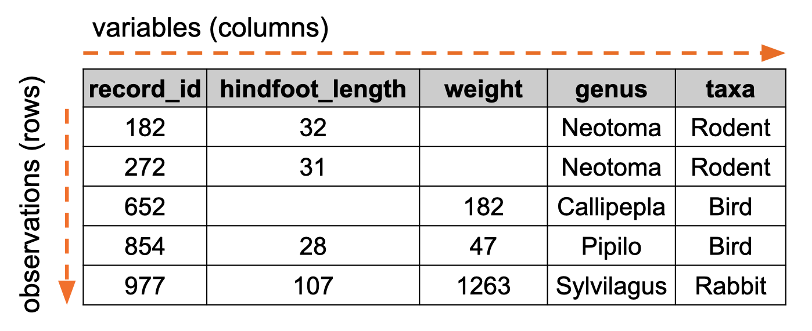

library(tidyverse)5 Working with tabular data
Learning objectives
- Understand the structure of tabular data
- Be able to read in tabular data
- Investigate properties of the data (e.g. types of variables, missing data)
5.1 Context
In the previous section we dealt with single objects and vectors/lists. Here we expand towards tabular data, which can be seen as a set of these grouped together.
5.2 Tabular data
Tables are organised in columns (vertical) and rows (horizontal). An example of a tabular data set is given in Figure 5.1.
There, each column contains a variable (a thing that we’ve measured). Each row is a unique observation.

5.3 Working with data
Tabular data sets are often created in spreadsheet programmes, such as Excel. These programmes are actually very well-suited, since they make it easy to enter data and keep an overview. When it comes to analysing these data, we’re better off using coding - that way we can keep track of our analysis.
The default Excel format is not great, since it’s a propriety format and not natively readable by other computer programmes. Good alternatives are .csv (comma-separated values) files or .tsv (tab-separated values) files.
For the next few sections we’ll be using the surveys.csv data set (which you should now have in your data-analysis/data sub folder).
We’ll read in these data now.
If you haven’t done so already, make sure to load the tidyverse package:
Next, we read in the file using the read_csv() function. Note that there is also a read.csv() function, but that one behaves slightly differently, so ensure you use the correct function name!
read_csv("data/surveys.csv")Rows: 35549 Columns: 9
── Column specification ────────────────────────────────────────────────────────
Delimiter: ","
chr (2): species_id, sex
dbl (7): record_id, month, day, year, plot_id, hindfoot_length, weight
ℹ Use `spec()` to retrieve the full column specification for this data.
ℹ Specify the column types or set `show_col_types = FALSE` to quiet this message.# A tibble: 35,549 × 9
record_id month day year plot_id species_id sex hindfoot_length weight
<dbl> <dbl> <dbl> <dbl> <dbl> <chr> <chr> <dbl> <dbl>
1 1 7 16 1977 2 NL M 32 NA
2 2 7 16 1977 3 NL M 33 NA
3 3 7 16 1977 2 DM F 37 NA
4 4 7 16 1977 7 DM M 36 NA
5 5 7 16 1977 3 DM M 35 NA
6 6 7 16 1977 1 PF M 14 NA
7 7 7 16 1977 2 PE F NA NA
8 8 7 16 1977 1 DM M 37 NA
9 9 7 16 1977 1 DM F 34 NA
10 10 7 16 1977 6 PF F 20 NA
# ℹ 35,539 more rowsWe’ll be using the read_csv() function from pandas, so make sure to load this module first.
import pandas as pdpd.read_csv("data/surveys.csv") record_id month day year ... species_id sex hindfoot_length weight
0 1 7 16 1977 ... NL M 32.0 NaN
1 2 7 16 1977 ... NL M 33.0 NaN
2 3 7 16 1977 ... DM F 37.0 NaN
3 4 7 16 1977 ... DM M 36.0 NaN
4 5 7 16 1977 ... DM M 35.0 NaN
... ... ... ... ... ... ... ... ... ...
35544 35545 12 31 2002 ... AH NaN NaN NaN
35545 35546 12 31 2002 ... AH NaN NaN NaN
35546 35547 12 31 2002 ... RM F 15.0 14.0
35547 35548 12 31 2002 ... DO M 36.0 51.0
35548 35549 12 31 2002 ... NaN NaN NaN NaN
[35549 rows x 9 columns]This actually spits out quite a bit of information onto the screen! This is because we’ve not assigned the output of reading in the file to an object. As such, we can’t work with the data yet. So, we’ll have to fix this. I’ve done this on purpose, of course, to show that the command itself works.
It is always good practice to run commands like this without assigning things. That way you can double-check what gets stored into an object! We’ll save the data into an object called surveys.
surveys <- read_csv("data/surveys.csv")surveys = pd.read_csv("data/surveys.csv")
Reading in different types of data
There are many different functions available to read in various data formats. Below are some of the most common ones.
The readr package (part of tidyverse) has several functions to read data in different formats.
read_csv()- for comma separated valuesread_tsv()- for tab separated valuesread_csv2()- for CSV files exported from non-English spreadsheet programs that use the semi-colon ; as a separator and a comma , as the decimal place.read_table()- to read data where each column is separated by one or more spaces.read_delim()- a flexible function that allows you to define your own delimiter.
These functions have equivalents in base R (the default installation of R), which you can also use. They are very similarly named, for example: read.csv() and read.table() (notice the . instead of _ in the function name). However, they have different default options, so pay attention to which one you use!
Python’s pd.read_csv() function from pandas can read in many different types of (tabular) data. The way it recognises the different formats is by specifying the separator:
pd.read_csv()- for comma separated valuespd.read_csv(file.tsv, sep = "\t")- for tab separated valuespd.read_csv(file.csv, sep = ";")- for CSV files exported from non-English spreadsheet programs that use the semi-colon ; as a separator and a comma , as the decimal place.pd.read_table(file.txt)- for general delimited text files and equivalent topd.read_csv()with a default delimiter of\t(tab)
5.4 Table structure
Now that we’ve read in the surveys data set, we can start exploring it a bit more. It’s quite a substantial data set, with 9 columns and 35549 rows.
5.4.1 Getting the first few rows
A good starting point is to get a snippet of the data. We can use the head() function to get the first few rows of the table.
head(surveys)# A tibble: 6 × 9
record_id month day year plot_id species_id sex hindfoot_length weight
<dbl> <dbl> <dbl> <dbl> <dbl> <chr> <chr> <dbl> <dbl>
1 1 7 16 1977 2 NL M 32 NA
2 2 7 16 1977 3 NL M 33 NA
3 3 7 16 1977 2 DM F 37 NA
4 4 7 16 1977 7 DM M 36 NA
5 5 7 16 1977 3 DM M 35 NA
6 6 7 16 1977 1 PF M 14 NAsurveys.head() record_id month day year plot_id species_id sex hindfoot_length weight
0 1 7 16 1977 2 NL M 32.0 NaN
1 2 7 16 1977 3 NL M 33.0 NaN
2 3 7 16 1977 2 DM F 37.0 NaN
3 4 7 16 1977 7 DM M 36.0 NaN
4 5 7 16 1977 3 DM M 35.0 NaN5.4.2 Understanding overall structure
It’s also useful to have a bit of an overview of the overall structure of the table. This may seems trivial with smaller data sets, but the bigger the data set, the harder this can become!
If we are just interested in finding out which columns we have, we can use:
colnames(surveys)[1] "record_id" "month" "day" "year"
[5] "plot_id" "species_id" "sex" "hindfoot_length"
[9] "weight" However, sometimes we want more detailed information. We can do this as follows:
str(surveys)spc_tbl_ [35,549 × 9] (S3: spec_tbl_df/tbl_df/tbl/data.frame)
$ record_id : num [1:35549] 1 2 3 4 5 6 7 8 9 10 ...
$ month : num [1:35549] 7 7 7 7 7 7 7 7 7 7 ...
$ day : num [1:35549] 16 16 16 16 16 16 16 16 16 16 ...
$ year : num [1:35549] 1977 1977 1977 1977 1977 ...
$ plot_id : num [1:35549] 2 3 2 7 3 1 2 1 1 6 ...
$ species_id : chr [1:35549] "NL" "NL" "DM" "DM" ...
$ sex : chr [1:35549] "M" "M" "F" "M" ...
$ hindfoot_length: num [1:35549] 32 33 37 36 35 14 NA 37 34 20 ...
$ weight : num [1:35549] NA NA NA NA NA NA NA NA NA NA ...
- attr(*, "spec")=
.. cols(
.. record_id = col_double(),
.. month = col_double(),
.. day = col_double(),
.. year = col_double(),
.. plot_id = col_double(),
.. species_id = col_character(),
.. sex = col_character(),
.. hindfoot_length = col_double(),
.. weight = col_double()
.. )
- attr(*, "problems")=<externalptr> If we are just interested in finding out which columns we have, we can use:
surveys.columnsIndex(['record_id', 'month', 'day', 'year', 'plot_id', 'species_id', 'sex',
'hindfoot_length', 'weight'],
dtype='object')However, sometimes we want more detailed information. We can do this as follows:
surveys.info()<class 'pandas.core.frame.DataFrame'>
RangeIndex: 35549 entries, 0 to 35548
Data columns (total 9 columns):
# Column Non-Null Count Dtype
--- ------ -------------- -----
0 record_id 35549 non-null int64
1 month 35549 non-null int64
2 day 35549 non-null int64
3 year 35549 non-null int64
4 plot_id 35549 non-null int64
5 species_id 34786 non-null object
6 sex 33038 non-null object
7 hindfoot_length 31438 non-null float64
8 weight 32283 non-null float64
dtypes: float64(2), int64(5), object(2)
memory usage: 2.4+ MBThis gives quite a bit of information, but overall it’s quite straightforward: we can see the number of rows and column and we have information on the type of data that is contained in each column.
5.4.3 Summary values
Lastly, we can get some more information by creating some summary statistics.
This can be quite useful to quickly check if there are any strange values in your data. For example, you might have expectations on what is a plausible weight value, so if there are typos or errors (e.g. weight = 0), they will quickly show up.
summary(surveys) record_id month day year plot_id
Min. : 1 Min. : 1.000 Min. : 1.00 Min. :1977 Min. : 1.0
1st Qu.: 8888 1st Qu.: 4.000 1st Qu.: 9.00 1st Qu.:1984 1st Qu.: 5.0
Median :17775 Median : 6.000 Median :16.00 Median :1990 Median :11.0
Mean :17775 Mean : 6.478 Mean :15.99 Mean :1990 Mean :11.4
3rd Qu.:26662 3rd Qu.:10.000 3rd Qu.:23.00 3rd Qu.:1997 3rd Qu.:17.0
Max. :35549 Max. :12.000 Max. :31.00 Max. :2002 Max. :24.0
species_id sex hindfoot_length weight
Length:35549 Length:35549 Min. : 2.00 Min. : 4.00
Class :character Class :character 1st Qu.:21.00 1st Qu.: 20.00
Mode :character Mode :character Median :32.00 Median : 37.00
Mean :29.29 Mean : 42.67
3rd Qu.:36.00 3rd Qu.: 48.00
Max. :70.00 Max. :280.00
NA's :4111 NA's :3266 surveys.describe() record_id month ... hindfoot_length weight
count 35549.000000 35549.000000 ... 31438.000000 32283.000000
mean 17775.000000 6.477847 ... 29.287932 42.672428
std 10262.256696 3.396925 ... 9.564759 36.631259
min 1.000000 1.000000 ... 2.000000 4.000000
25% 8888.000000 4.000000 ... 21.000000 20.000000
50% 17775.000000 6.000000 ... 32.000000 37.000000
75% 26662.000000 10.000000 ... 36.000000 48.000000
max 35549.000000 12.000000 ... 70.000000 280.000000
[8 rows x 7 columns]5.5 Basic subsetting of data
Although we’ll go into more detail on how to select portions of a larger data set, we’ll briefly cover some very basic subsetting techniques here - just to get us going.
5.5.1 Selecting columns
We saw that there are 9 different columns in our data set. One of them is weight, which holds weight measurements for different animal records.
We can easily select an individual column using the $ symbol. We type the name of the object and then specify which column we’re interested in:
surveys$weightWe can easily select an individual column in a pandas data frame using the . notation. We type the name of the object and then specify which column we’re interested in:
surveys.weight0 NaN
1 NaN
2 NaN
3 NaN
4 NaN
...
35544 NaN
35545 NaN
35546 14.0
35547 51.0
35548 NaN
Name: weight, Length: 35549, dtype: float645.5.2 Subsetting rows and columns
We can subset specific rows and columns using the square bracket [ ] notation. The way this is ordered is [rows, columns].
We can divide the way we extract the data into two methods: based on their numerical index (index-based subsetting) or based on their label/name in the table (label-based subsetting).
Here, we are asking to return all the rows for the species_id column (its label). Note the comma before the "species_id" notation.
surveys[ , "species_id"]# A tibble: 35,549 × 1
species_id
<chr>
1 NL
2 NL
3 DM
4 DM
5 DM
6 PF
7 PE
8 DM
9 DM
10 PF
# ℹ 35,539 more rowsWe can also select a subset of rows for this column, for example the first 3 rows:
surveys[1:3, "species_id"]# A tibble: 3 × 1
species_id
<chr>
1 NL
2 NL
3 DM Here, we are asking to return all the rows for the species_id column. We use the loc to use label-based indexing. Note the : , before the "species_id" notation. This tells Python to get all the rows.
surveys.loc[: , "species_id"]0 NL
1 NL
2 DM
3 DM
4 DM
...
35544 AH
35545 AH
35546 RM
35547 DO
35548 NaN
Name: species_id, Length: 35549, dtype: objectWe can also select a subset of rows for this column, for example the first 3 rows:
surveys.loc[0:2, "species_id"]0 NL
1 NL
2 DM
Name: species_id, dtype: objectAlternatively, we use index-based subsetting:
Let’s grab the first 3 rows, and columns 2 to 4:
surveys[1:3, 2:4]# A tibble: 3 × 3
month day year
<dbl> <dbl> <dbl>
1 7 16 1977
2 7 16 1977
3 7 16 1977or rows 10 to 15, and columns 2, 6 and 8:
surveys[10:15, c(2, 6, 8)]# A tibble: 6 × 3
month species_id hindfoot_length
<dbl> <chr> <dbl>
1 7 PF 20
2 7 DS 53
3 7 DM 38
4 7 DM 35
5 7 DM NA
6 7 DM 36Let’s grab the first 3 rows, and columns 2 to 4:
surveys.iloc[0:3, 1:4] month day year
0 7 16 1977
1 7 16 1977
2 7 16 1977or rows 10 to 15, and columns 2, 6 and 8:
surveys.iloc[9:15, [1, 5, 7]] month species_id hindfoot_length
9 7 PF 20.0
10 7 DS 53.0
11 7 DM 38.0
12 7 DM 35.0
13 7 DM NaN
14 7 DM 36.0Remember, Python’s indexing is zero-based - so you have to be quite careful/accurate when you’re after specific indexes!
5.6 Saving
Before we move on to the next section, we’ll practice saving data to file. You might want to do this if you created new tables or subsetted your data and don’t want to repeat that every single time you do your analysis.
Important
Remember: never overwrite your raw data but always keep this as a separate copy!
Let’s create a practice data set to save, for example by taking the first 20 rows of our surveys data set and saving it in a file surveys_snippet.csv.
surveys_snippet <- surveys[1:20, ]We can now save this. We do this with the write_csv() function. We need to tell it which data set to save (this comes first) and then tell it with the file = argument where we want to save it. Here, we’re saving it in our data/ folder, as a file called surveys_snippet.csv. The file extension .csv is important, so don’t forget to add it!
write_csv(surveys_snippet, file = "data/surveys_snippet.csv")Let’s create a practice data set to save, for example by taking the first 20 rows of our surveys data set and saving it in a file surveys_snippet.csv.
surveys_snippet = surveys.iloc[0:20, :]We can now save this. We do this using .to_csv . We need to tell it which data set to save (this comes first) and then tell it where we want to save it. Here, we’re saving it in our data/ folder, as a file called surveys_snippet.csv. The file extension .csv is important, so don’t forget to add it!
We also include the index = False argument, so that the row numbers are not written to file.
surveys_snippet.to_csv("data/surveys_snippet.csv", index = False)5.7 Summary
Key points
- Tabular data is structured into columns (variables) and rows (observations)
- Common data types include CSVs and TSVs - widely accessible formats where data are separated by commas or tabs
- It is good practice to get insight into your data by examining the structure, creating summary statistics and checking for missing values
- Basic subsetting allows us to quickly pull out certain variables or observations
- Write modified tables to file, but always keep the original, raw, data intact!